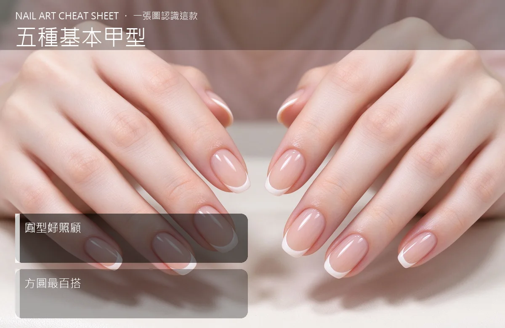

美甲五種基本甲型是什麼？入門入門攻略
甲型選對，手指自動瘦一圈；選錯，做完再貴也怪怪的。
五種基本甲型原理與辨識重點：美甲師不說的方型帥氣
甲型就是指甲前端的輪廓，基本五款各有性格：方型俐落帥氣、圓型溫和好顧、橢圓修長優雅、尖型（杏仁／矛型）拉長手指比例、方圓（squoval）是兩個中間最安全的折中。選甲型不是跟流行，是看你的指長、指粗、還有日常工作性質。
誰適合做五種基本甲型？美甲師必修對號入座
第一次想幫自己修指甲、或每次做完都覺得「哪裡怪怪的」卻說不出來的人。
五種基本甲型美甲施作步驟：方型／圓型／橢圓／尖型／方圓
先看自己手指：粗短指頭選橢圓或杏仁尖，拉長視覺；細長手指選方或方圓更俐落。再修對稱——兩手比對，左右弧度要一致。最後用細銼收邊，不要來回磨。
五種基本甲型優缺點分析：美甲持久度與傷甲評估
| 優點 | 說明 |
|---|---|
| 選對甲型，視覺上手指立刻修長，上班打字、做家事也不容易卡。 | 是通用流派的招牌，入門就能上手 |
| 缺點 | 說明 |
| 尖型和超長方型結構弱、容易斷；短圓型最耐操但不修飾手型。 | 前置與別一次跳太大改變——留了五年圓型突然改超尖，自己不習慣、也容易撞斷。先從方圓過渡。沒顧好會打折 |

五種基本甲型新手雷區：圓型好照顧與常見錯誤
注意：別一次跳太大改變——留了五年圓型突然改超尖，自己不習慣、也容易撞斷。先從方圓過渡。
五種基本甲型和其他美甲做法的差別比較
跟「銼刀與打磨」不同：那篇講用什麼工具、怎麼磨才不傷甲；這篇決定「修成什麼形」。
五種基本甲型美甲常見問題 FAQ
Q：我手指短又粗，適合什麼甲型？ A：橢圓或杏仁尖型，能在視覺上拉長比例；避免短方型，那會讓手看起來更短更方。
Q：一定要跟流行做超尖嗎？ A：不用。要打字、做家事的人，方圓或短圓最實用；好看的前提是「你日常生活不會一直撞到」。